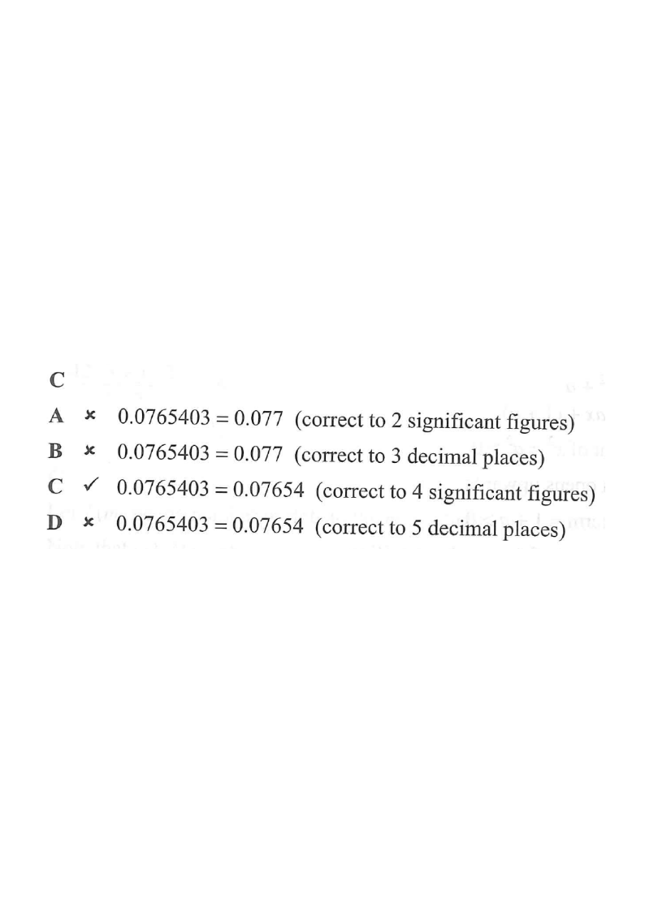

HKDSE 2016 · Paper 2 · Q4 | Estimation, Approximation and Error
$0.0765403 = $
- A$0.076$ (correct to 2 significant figures)
- B$0.0765$ (correct to 3 decimal places)
- C$0.07654$ (correct to 4 significant figures)
- D$0.076540$ (correct to 5 decimal places)

Solution
1Line up the digits and mark the first significant figure
Write the number with each digit in its own place-value column, and place the decimal point clearly:
$$0.0765403 = 0\;\underset{\downarrow}{.}\;0\;7\;6\;5\;4\;0\;3$$
The leading zeros after the decimal point are not significant — they merely fix the position of the decimal point.
Hint: the first non-zero digit is $7$, so the 1st significant figure is the $7$ (the 2nd decimal place).
Significant Figures
\(\text{the 1st significant figure is the 1st non-zero digit}\)
In \\(0.0765403\\) the leading zeros only fix the decimal point, so the 1st significant figure is the \\(7\\).
2Count the required significant figures
Starting at that $7$, count out the required number of significant figures:
So to 4 significant figures we keep $0.0765\underline{4}$, and the digit immediately after is $0$.
Hint: the cutoff digit here is $0 < 5$, so we round down (do not increase the 4th significant figure $4$).
| sig. fig. | 1st | 2nd | 3rd | 4th | 5th | 6th |
|---|---|---|---|---|---|---|
| digit | 7 | 6 | 5 | 4 | 0 | 3 |
Rounding Rule (half up)
\(\text{next digit}\ \ge 5\ \Rightarrow\ \text{round up},\quad <5\ \Rightarrow\ \text{round down}\)
Keeping four significant figures gives \\(0.07654\\) and the next digit is \\(0\\), so no carry is needed.
3Check option A — "2 significant figures"
To 2 s.f. we keep $0.076$, and the next digit is $5$. Since $5 \ge 5$ we round up:
$$0.0765403 \approx 0.077 \quad(\text{not } 0.076)$$
Option A is incorrect.
Common trap: forgetting the half-up rule drops the carried digit.
4Check option B — "3 decimal places"
To 3 d.p. we keep three digits after the decimal point: $0.076|5403$. The next digit is $5$, so round up:
$$0.0765403 \approx 0.077 \quad(\text{not } 0.0765)$$
Option B is incorrect.
Trap: mixing up "decimal places" (counted from the point) with "significant figures" (counted from the first non-zero digit).
Decimal Places versus Significant Figures
\(n\ \text{d.p. counts digits after the decimal point}\)
To \\(3\\) d.p. we keep \\(0.076\\) and look at the next digit \\(5\\), which rounds the value up to \\(0.077\\).
5Check option C — "4 significant figures"
Following Steps 1–2, to 4 s.f. we keep $0.0765$4 and look at the next digit $0$:
$$0 \not\ge 5 \;\Rightarrow\; \text{round down} \;\Rightarrow\; 0.0765403 \approx 0.07654$$
Option C is correct.
This is the only option whose stated accuracy matches the digits shown.
6Check option D — "5 decimal places"
To 5 d.p. we keep five digits after the point: $0.07654|03$. The next digit is $0$, so round down:
$$0.0765403 \approx 0.07654 \quad(\text{not } 0.076540)$$
The trailing zero in option D is not justified — writing it would claim accuracy to 6 d.p., which is wrong.
Option D is incorrect.
Trap: keeping a meaningless trailing zero.
Answer: C — $0.0765403 = 0.07654$ (correct to 4 significant figures)
PRACTICESimilar question — try it yourself
Question. Express \\(0.0049036\\) correct to (a) \\(2\\) significant figures, (b) \\(4\\) decimal places, (c) \\(3\\) significant figures.
Show the worked solution
Step 1. The leading zeros are not significant, so the 1st significant figure is the \\(4\\) (the 3rd decimal place).
Step 2. (a) To \\(2\\) s.f. keep \\(0.0049\\); the next digit is \\(0<5\\), so the answer is \\(0.0049\\).
Step 3. (b) To \\(4\\) d.p. keep \\(0.0049\\); the next digit is \\(0<5\\), so the answer is \\(0.0049\\).
Step 4. (c) To \\(3\\) s.f. keep \\(0.00490\\); the trailing zero must be written to show three significant figures.
Answer: (a) \\(0.0049\\) \quad (b) \\(0.0049\\) \quad (c) \\(0.00490\)